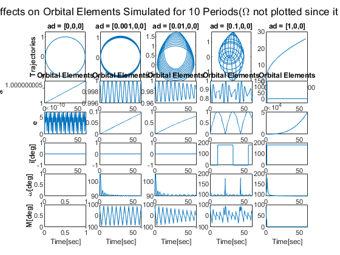

Contents
function Averaging
Simulation Parameters:
n = 10;
tspan = [0 n*2*pi];
ad = 0:
r0 = [1;0;0]; v0 = [0;1;0]; ad = [0;0;0]; mu = 1;
x0 = [r0;v0];
[t1,x1] = ode45(@(t,x)EOM(t,x,ad,mu),tspan,x0,odeset('AbsTol',1e-12,'RelTol',1e-9));
a1 = CartesiantoOrbitalElements(x1',mu);
ad = 0.001:
r0 = [1;0;0]; v0 = [0;1;0]; ad = [0.001;0;0]; mu = 1;
x0 = [r0;v0];
[t2,x2] = ode45(@(t,x)EOM(t,x,ad,mu),tspan,x0,odeset('AbsTol',1e-12,'RelTol',1e-9));
a2 = CartesiantoOrbitalElements(x2',mu);
ad = 0.01:
r0 = [1;0;0]; v0 = [0;1;0]; ad = [0.01;0;0]; mu = 1;
x0 = [r0;v0];
[t3,x3] = ode45(@(t,x)EOM(t,x,ad,mu),tspan,x0,odeset('AbsTol',1e-12,'RelTol',1e-9));
a3 = CartesiantoOrbitalElements(x3',mu);
ad = 0.1:
r0 = [1;0;0]; v0 = [0;1;0]; ad = [0.1;0;0]; mu = 1;
x0 = [r0;v0];
[t4,x4] = ode45(@(t,x)EOM(t,x,ad,mu),tspan,x0,odeset('AbsTol',1e-12,'RelTol',1e-9));
a4 = CartesiantoOrbitalElements(x4',mu);
ad = 1:
r0 = [1;0;0]; v0 = [0;1;0]; ad = [1;0;0]; mu = 1;
x0 = [r0;v0];
[t5,x5] = ode45(@(t,x)EOM(t,x,ad,mu),tspan,x0,odeset('AbsTol',1e-12,'RelTol',1e-9));
a5 = CartesiantoOrbitalElements(x5',mu);
Plot:
figure;
subplot(7,5,[1 6]);
plot(x1(:,1),x1(:,2)); axis equal;
ylabel('Trajectories','fontweight','bold');
title('ad = [0,0,0]');
subplot(7,5,11);
plot(t1,a1(1,:));
xlabel('Time[sec]');
ylabel('a','fontweight','bold');
title('Orbital Elements');
subplot(7,5,16);
plot(t1,a1(2,:));
xlabel('Time[sec]');
ylabel('e','fontweight','bold');
subplot(7,5,21);
plot(t1,a1(3,:));
xlabel('Time[sec]');
ylabel('i[deg]','fontweight','bold');
subplot(7,5,26);
plot(t1,a1(5,:));
xlabel('Time[sec]');
ylabel('\omega[deg]','fontweight','bold');
subplot(7,5,31);
plot(t1,a1(6,:));
xlabel('Time[sec]');
ylabel('M[deg]','fontweight','bold');
subplot(7,5,[2 7]);
plot(x2(:,1),x2(:,2)); axis equal;
title('ad = [0.001,0,0]');
subplot(7,5,12);
plot(t2,a2(1,:));
xlabel('Time[sec]');
title('Orbital Elements');
subplot(7,5,17);
plot(t2,a2(2,:));
xlabel('Time[sec]');
subplot(7,5,22);
plot(t2,a2(3,:));
xlabel('Time[sec]');
subplot(7,5,27);
plot(t2,a2(5,:));
xlabel('Time[sec]');
subplot(7,5,32);
plot(t2,a2(6,:));
xlabel('Time[sec]');
subplot(7,5,[3 8]);
plot(x3(:,1),x3(:,2)); axis equal;
title('ad = [0.01,0,0]');
subplot(7,5,13);
plot(t3,a3(1,:));
xlabel('Time[sec]');
title('Orbital Elements');
subplot(7,5,18);
plot(t3,a3(2,:));
xlabel('Time[sec]');
subplot(7,5,23);
plot(t3,a3(3,:));
xlabel('Time[sec]');
subplot(7,5,28);
plot(t3,a3(5,:));
xlabel('Time[sec]');
subplot(7,5,33);
plot(t3,a3(6,:));
xlabel('Time[sec]');
subplot(7,5,[4 9]);
plot(x4(:,1),x4(:,2)); axis equal;
title('ad = [0.1,0,0]');
subplot(7,5,14);
plot(t4,a4(1,:));
xlabel('Time[sec]');
title('Orbital Elements');
subplot(7,5,19);
plot(t4,a4(2,:));
xlabel('Time[sec]');
subplot(7,5,24);
plot(t4,a4(3,:));
xlabel('Time[sec]');
subplot(7,5,29);
plot(t4,a4(5,:));
xlabel('Time[sec]');
subplot(7,5,34);
plot(t4,a4(6,:));
xlabel('Time[sec]');
subplot(7,5,[5 10]);
plot(x5(:,1),x5(:,2));
title('ad = [1,0,0]');
subplot(7,5,15);
plot(t5,a5(1,:));
xlabel('Time[sec]');
title('Orbital Elements');
subplot(7,5,20);
plot(t5,a5(2,:));
xlabel('Time[sec]');
subplot(7,5,25);
plot(t5,a5(3,:));
xlabel('Time[sec]');
subplot(7,5,30);
plot(t5,a5(5,:));
xlabel('Time[sec]');
subplot(7,5,35);
plot(t5,a5(6,:));
xlabel('Time[sec]');
sgtitle('Perturbing Acceleration Effects on Orbital Elements Simulated for 10 Periods(\Omega not plotted since it is undefined for all orbits)');

end
EOM:
function xdot = EOM(t,x,ad,mu)
xdot = [x(4:6); -mu/norm(x(1:3))^3*x(1:3)+ad];
end
Orbital Elements Converter:
function a = CartesiantoOrbitalElements(x,mu)
v = x(4:6,:);
r = x(1:3,:);
vmag = sqrt(sum(v.^2));
rmag = sqrt(sum(r.^2));
h = cross(r,v);
hmag = sqrt(sum(h.^2));
n = cross([0;0;1]*ones(1,length(h)),h);
nmag = sqrt(sum(n.^2));
e = 1/mu*((vmag.^2-mu./rmag).*r-dot(r,v).*v);
emag = sqrt(sum(e.^2));
i = acosd(h(3,:)./(hmag));
Om = acosd(n(1,:)./nmag);
Om(n(2,:)<0) = 360 - Om(n(2,:)<0);
if nmag == 0
om = acosd(e(1,:)./emag);
om(emag<10^-8) = NaN;
else
om = acosd(dot(n,e)./(nmag.*emag));
end
om(e(3,:)<0) = 360 - om(e(3,:)<0);
p = hmag.^2/mu;
a = p./(1-emag.^2);
f = acos(dot(e,r)./(emag.*rmag));
f(dot(r,v)<0) = 2*pi - f(dot(r,v)<0);
f(emag<10^-8) = NaN;
M = 180/pi*(asin(sqrt(1-emag.^2).*sin(f)./(1+emag.*cos(f)))-emag.*sqrt(1-emag.^2).*sin(f)./(1+emag.*cos(f)));
a = [a;emag;i;Om;om;M];
end